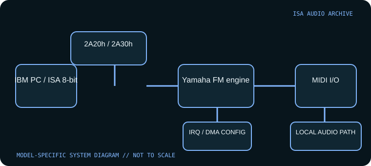

[ INDIVIDUAL COMPONENT // SOUND HARDWARE ]
IBM Music Feature Card
IBM’s Music Feature Card (IMFC) combines a Yamaha FM music engine with a MIDI interface. It targeted music software and selected games, not generic PCM effects; do not confuse it with a Roland MPU-401 card or external Yamaha FB-01.

Model-specific specifications
| Catalog identity | IBM Music Feature Card (IMFC), 1987 product; the card is a PC expansion providing Yamaha FM synthesis and MIDI I/O. |
|---|---|
| Bus / host | 8-bit ISA for IBM PC and compatible systems. Use an XT/AT-era host with a free expansion slot and software that implements IMFC support. |
| Sound engine / I/O | Yamaha YM2164/FB-01-class FM synthesis; IBM documentation and compatible emulators describe selectable I/O bases 2A20h or 2A30h. The external MIDI connectors/adapter configuration must be checked on the specimen. |
| IRQ | Selectable IRQ 2, 3, 4, 5, 6, or 7 in compatible configuration; the IMFC software setting must agree with the card/host. Preserve IRQ3 if verified as the installed setup, not as a universal default. |
| DMA | No audio DMA channel is required for its FM/MIDI operation; it is not a sampled PCM playback card. |
| Software / host compatibility | IBM diagnostics/setup disk and programs with IMFC support; Sierra titles and selected music/PC software supported the device. It is not automatically MPU-401-compatible merely because it has MIDI. |
| Connections / power | ISA-powered. Follow the IBM installation instructions for MIDI cable/connector arrangement and resource switches; check whether the specific bundle includes required external cabling. |
Compatibility & configuration notes
Compared with later PC sound cards, the IMFC presents a nonstandard resource map and a narrower software ecosystem. Its FM synth and MIDI path were intended for instruments and music-aware applications; an application that only expects AdLib, Sound Blaster, or intelligent MPU-401 will not necessarily communicate correctly. IBM’s installation instructions and the emulator device notes preserve the relevant I/O and IRQ model. Label board switches and the configured port/IRQ before moving it to another PC.
- Photograph model/revision markings, resource switches or jumpers, connector panel and installed options before installation.
- For every configured IRQ, DMA channel, I/O address and driver, record the actual setting used by the host; do not rely on a family name or an assumed default.
- Power down and unplug the host before fitting or removing an ISA card; retain period setup tools and documentation with the specimen.
Sources & archival documentation
- IBM Music Feature Card — Installation Instructions scanIBM installation instructions; consult the original switch and host procedure.
- DOSBox documentation — IBM Music Feature Card devicePreserved configuration reference lists base addresses and IRQ choices.
Where related model variants exist, the original manual and the physical card’s complete part/revision marking take precedence over generalized family summaries.